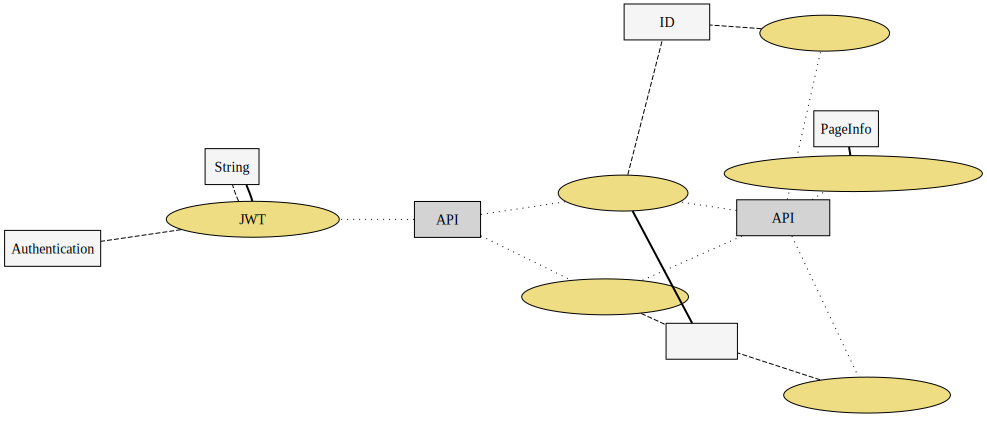

ユースケース複合図（ハンドラ）
{kind=link}
{kind=link}
認証APIサービス
com.example.sms.service.system.auth.AuthApiService
ユーザーJWT認証
authenticateUser(Authentication, String, String):String
- 要求するもの（引数）
- String
- String
- Authentication
- 得られるもの（戻り値）
- String
JWTトークンからユーザー名の取得
getUserNameFromJwtToke(String):String
- 要求するもの（引数）
- String
- 得られるもの（戻り値）
- String
JWTトークンの取得
validateJwtToke(String):boolean
- 要求するもの（引数）
- String
- 得られるもの（戻り値）
- boolean
JWTトークンの検証
validateJwtToken(String):boolean
- 要求するもの（引数）
- String
- 得られるもの（戻り値）
- boolean
認証サービス
com.example.sms.service.system.auth.AuthService
ユーザー認証
loadUserByUsername(String):UserDetails
- 要求するもの（引数）
- String
- 得られるもの（戻り値）
- UserDetails
ユーザー管理サービス
com.example.sms.service.system.user.UserManagementService
ユーザー削除
delete(UserId):void
- 要求するもの（引数）
- ユーザーID
ユーザー検索
find(UserId):User
ユーザー新規登録
register(User):void
- 要求するもの（引数）
- ユーザー
ユーザー情報編集
save(User):void
- 要求するもの（引数）
- ユーザー
ユーザー一覧
selectAll():UserList
- 得られるもの（戻り値）
- ユーザー一覧
selectAllWithPageInfo
selectAllWithPageInfo():PageInfo<User>